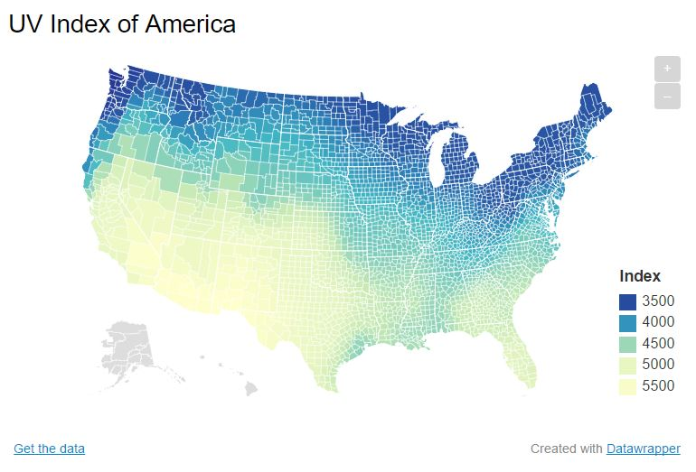
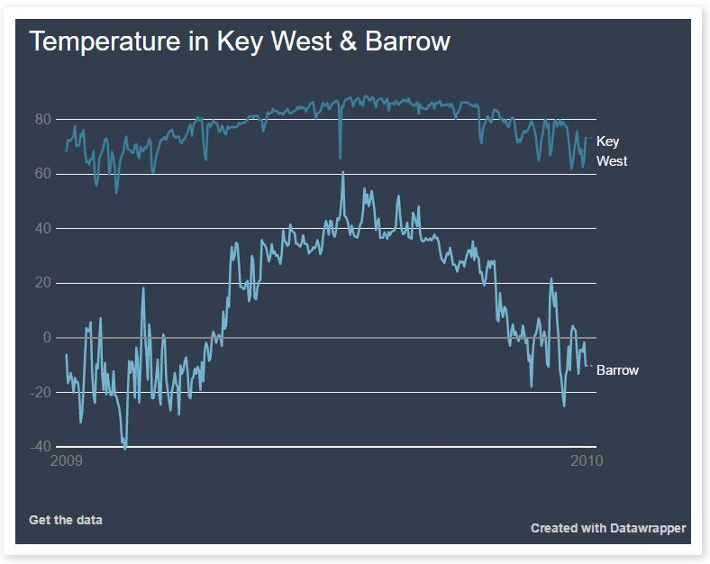

Simple jQuery/JavaScript Exercise Showing Taxis Flooded Post-Hurricane Sandy
But First ... Learning HTML With Card Games
Taking puzzles to a new level @ProPublica with @TasnimS #DataInstitute. We solved the code!
— Sandra Gomez-Aceves (@SanGomez_News) June 13, 2017
Spreadsheets: Line Graphs vs. Bar Graphs

This line graph was produced from a pivot table using CDC data of outbreaks on cruise ships. We learned a bar graph produced from a pivot table would have been more accurate because of the limited data points (years), even though it's a continuous variable.
Additionally, visually, my placement of the image is misleading and suggests the graph is only in reference to outbreaks on Holland America, when it actually includes all reported lines.
Learning How/When To Float And Position In CSS

We also learned about the four principles of design CRAP:
We used these principles to redesign our resumes.
Visually Coherent Interactive Maps and Charts With Datawrapper
 One Data-Driven Project I Plan To Continue Working On:
Now have the tools to more accurately determine: